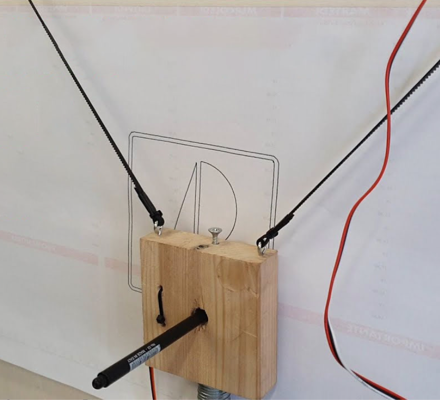
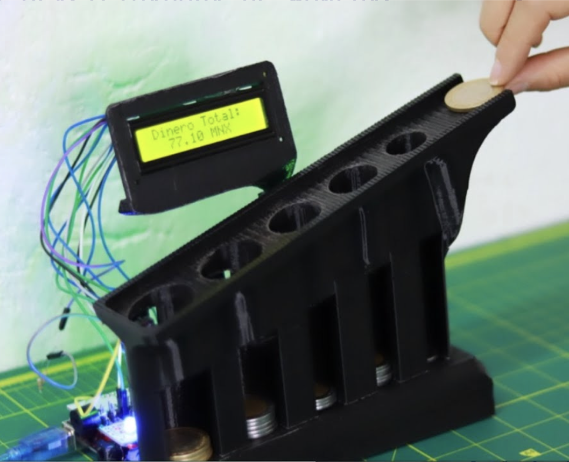
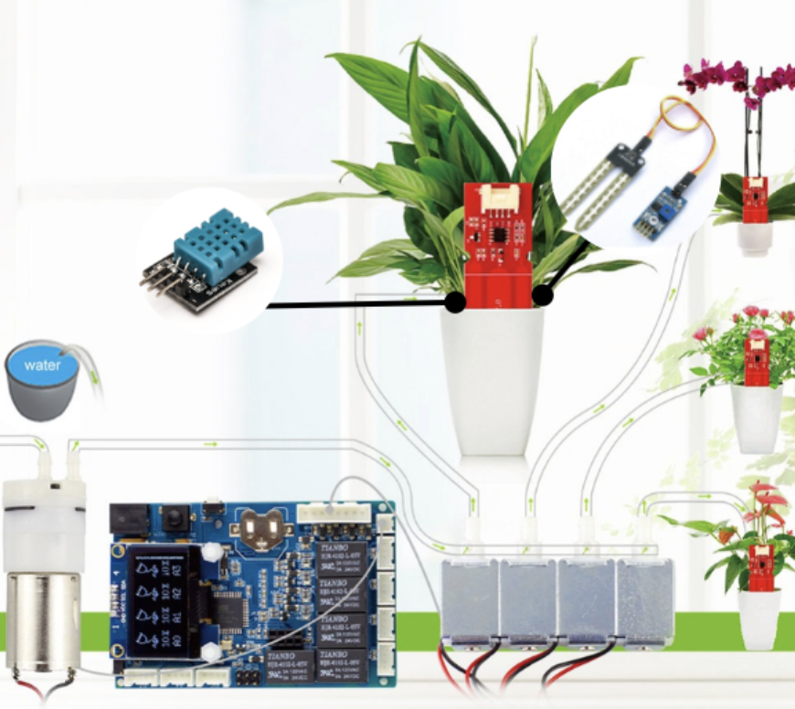
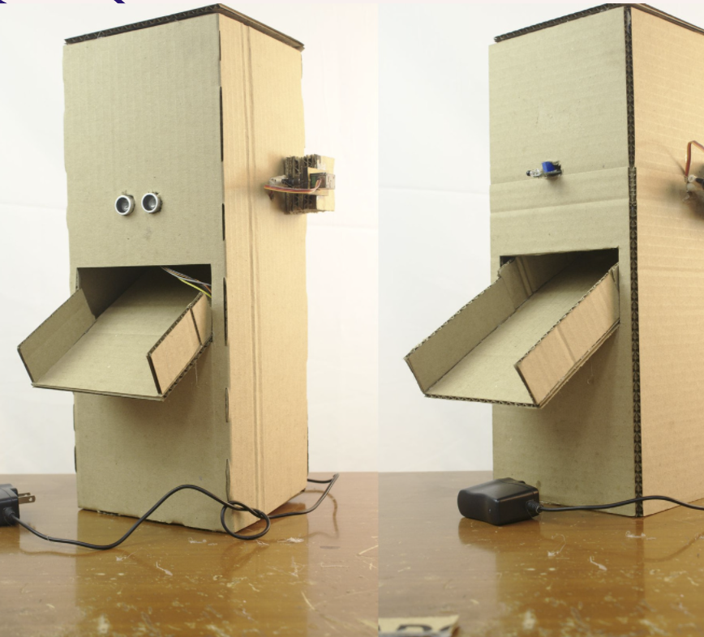
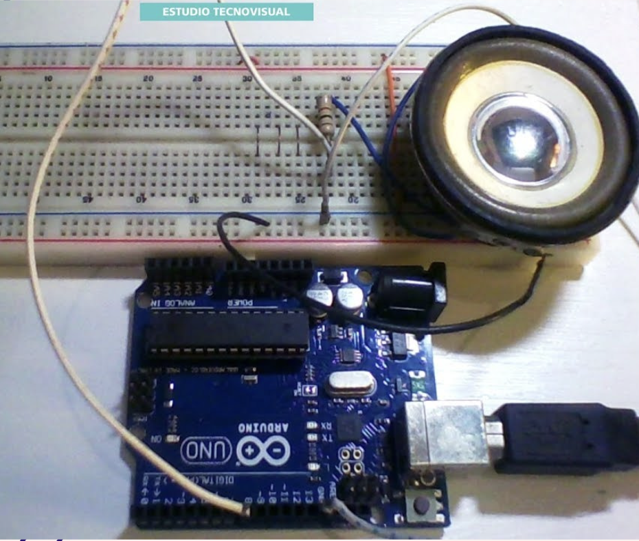
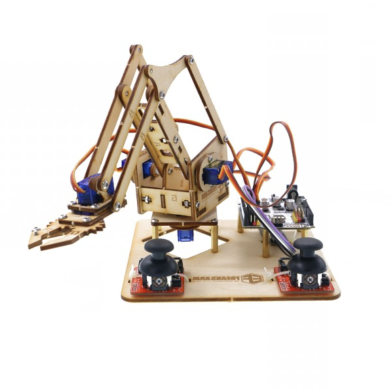

Datos y Propuestas
Ideas de proyectos de arduino
Les mostrare las propuestas que tuvimos antes de quedarnos con el proyecto final.
1. Plotter vertical
Este proyecto utiliza un lapicero, una placa de arduino, un adafruit motorshield v1 y otros materiales económicos que permiten dibujar linealmente una imagen que tengamos en vector de forma vertical.
2. Máquina clasificadora de monedas
Este clasificador de monedas utiliza la placa Arduino Uno que permite contar y clasificar diferentes monedas gracias a sensores infrarrojos.
3. Regado de plantas automático
El sistema de riego automático con Arduino regará siempre que detecte una serie de condiciones ambientales Por ejemplo, cuando detecta poca luz u oscuridad, la temperatura del aire es una concreta que configuraremos en el sketch de Arduino IDE, y cuando la humedad en el suelo sea baja.
4. Dispensador automático de comida
¿Estarás fuera de tu casa por largas horas o no tienes con quien dejar a tu mascota? Con este proyecto no importa si estás en la oficina o simplemente ocupado en el trabajo de la casa, el poder para alimentar a su mascota estará en la palma de su mano.
5. Alarma antirrobo
Sistema de alarma basado en Arduino. Con dos sensores uno de movimiento y otro de luz se detecta la alarma. Después de detectar alarma, se entra en un estado de pre-alarma que si no se introduce la clave correcta en 10 segundos, paso a un estado de alarma.
6. Brazo automático
A veces tenemos flojera, quien diga que no está mintiendo, así que ¿Qué mejor que un brazo robótico armado por nosotras mismas para poder darnos una mano? Esto es posible con la ayuda de nuestro maravilloso kit arduino